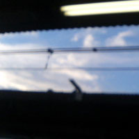
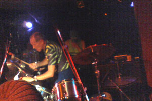
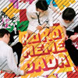
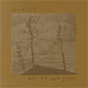
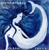
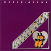
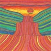

|
 |
#中央線、高円寺駅17:00
|
| 2004.5 / 2004.7 |
 |
#翌日会社有るにも関わらず、マニノイマイヤー（ドイツのGURU GURUってバンドのドラム）の来日の深夜イベントを見てきました。 L?K?OとTATEYAMA（AOA）とのセッションでしたけど、いやほんと64歳ってのが信じられないくらいの現役っぷり。日本人でこーゆーパワフルなジジイドラマーなんて居ないよなぁとか思いつつ。ドイツ流ズンドコビートと、トランスの饗宴を楽しんできました。 あ、その後は4:00amくらいにライヴハウスを出て、一緒に行ってた弟宅に宿泊。弟の家は行く度に何か機材が増えているのですがどーしたのでしょうか？いいなぁCS-15。 |

#amazon.co.jpで注文してたCDが届いてたのですよ、KOMEDA/KOKOMEMEDADAとBoards of Canada/Geogaddiって言うヤツで。 |
Rachel's/Music for Egon Schiele (1996) #ルイヴィルの音響派チェンバー。コレは2枚目でpiano/viola/celloの3人だけの演奏。もうなんつーか凄い綺麗な音楽で、サティとかドビュッシーみたいな感じなんだけど、でも完全にクラシックでは無い辺りが。 |
 |
Dirty Three/Ocean Songs (1998) #オーストラリアのバンド。violin/guitar/drumsって編成です。Jim O'Rourkeの最近のにも近いような気がします。ちょっとトラッドっぽくも有り、儚げな力強さみたいなモノ。Steve Albiniプロデュース、David Grubbs参加。 |
 |
Kevin Ayers/Bananamour (1973) #Kevin Ayersの3枚目。500円だったんすよ。なんだかボーナストラックにSyd Barrettが参加してるとかって話を聴いたんだけど、どれかわかんなかった。Robert WyattとMike Ratledgeが1曲ずつ参加。 |
| 23:00-23:45 | 折田尊子 | |
| 23:45-24:30 | 菅原悠 | |
| 24:30-01:15 | ウツボカズラ | |
| 01:15-01:45 | satomilk（ダイエーファン） | |
| 01:45-02:30 | Naoyuki Sasaki | |
| 02:30-03:15 | クドウハルヲ | |
| 03:15-04:00 | 河奥修也（ロッテ2軍ファン） | |
| 04:00-04:45 | 菅原圭（近鉄ファン） |

こないだのライヴ帰ってからBOAT関連の情報を漁ってたら、BOATのアナログってまだココ（Sony Music Shop）で売ってるのね。早速注文したヤツが今日来ました。内容はROROの「ALL」と「AKIRAMUJINA」と前のアルバムの「雲番人Bと釣人A」のリミックス、あと「Listening 0」って新曲、コレがまた最初聴いたときMats & Morganかと思うよーなハイパーな音。正直今更ハマってます。格好イイ。